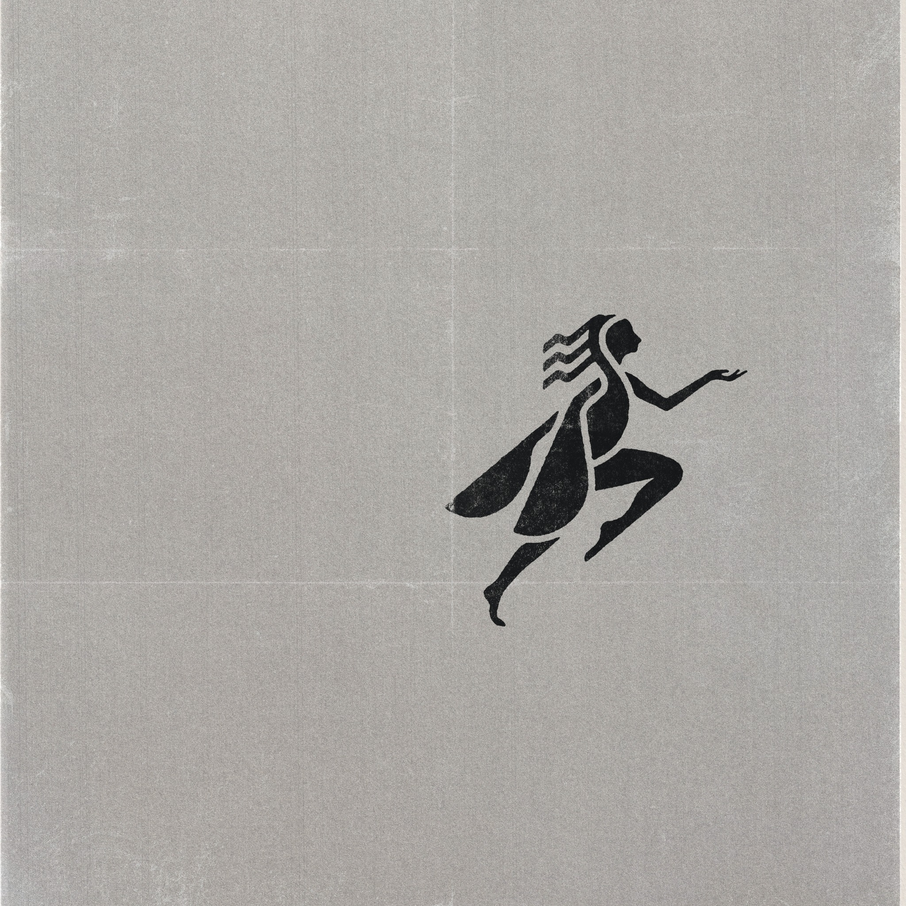
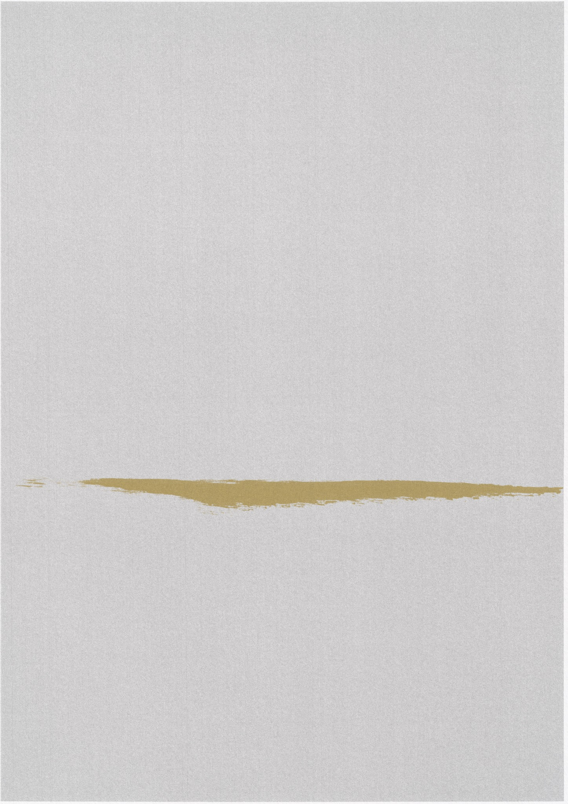

The SIDONIE Guide · London
See better things.
Exhibitions, concerts, plays, films, operas, and ideas,
selected by SIDONIE.
Coming up
London
Wed 16 Sep
£18–£50
Fri 18 Sep
£28–£70
Sun 27 Sep
From £24
Tue 29 Sep
£15–£55
Thu 1 Oct
£18–£50
Thu 8 Oct
£25
Sat 3 Oct
Symposium
Verdurin
Core Partner · Verdurin
Partner · Verdurin · About partner
£12
Mon 5 Oct
with Zinovy Zinik
Verdurin
Core Partner · Verdurin
Partner · Verdurin · About partner
£10
Tue 13 Oct
Edward McLaren · Joshua Knapp · Jaspreet Singh Boparai
Verdurin
Core Partner · Verdurin
Partner · Verdurin · About partner
£10
Wed 28 Oct
Peter Rollins
Verdurin
Core Partner · Verdurin
Partner · Verdurin · About partner
£10
Sat 14 Nov
Symposium
Verdurin
Core Partner · Verdurin
Partner · Verdurin · About partner
£12
Worth knowing
Ongoing
Performances, books, recordings and projects worth returning to beyond a single date in the calendar.
Ongoing
The Base
An ongoing dramatic project centred on Shakespeare’s 39 plays:
a continuing body of filmed performance rather than a one-night event.
Discovery source ·
The Base
· About source
Explore project
Worth
Gerald Barry
Robert Thicknesse’s review singles out Barry’s operatic treatment of Wilde as a work worth knowing beyond the life of a single production.
Discovery source · The Critic · Robert Thicknesse · About source
Read review
Worth
Rhoda Power
A firsthand account of revolutionary Russia, newly returned to print; Jeremy Jennings calls it a remarkable eyewitness record deserving a new generation of readers.
Discovery source · Engelsberg Ideas · About source
Read review
Partners & supporters
Partner
Supported by
SIDONIE
London · Research prototype